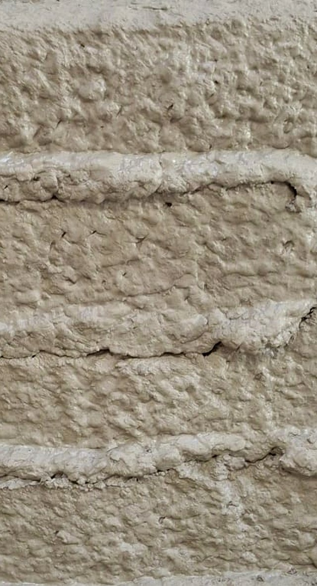
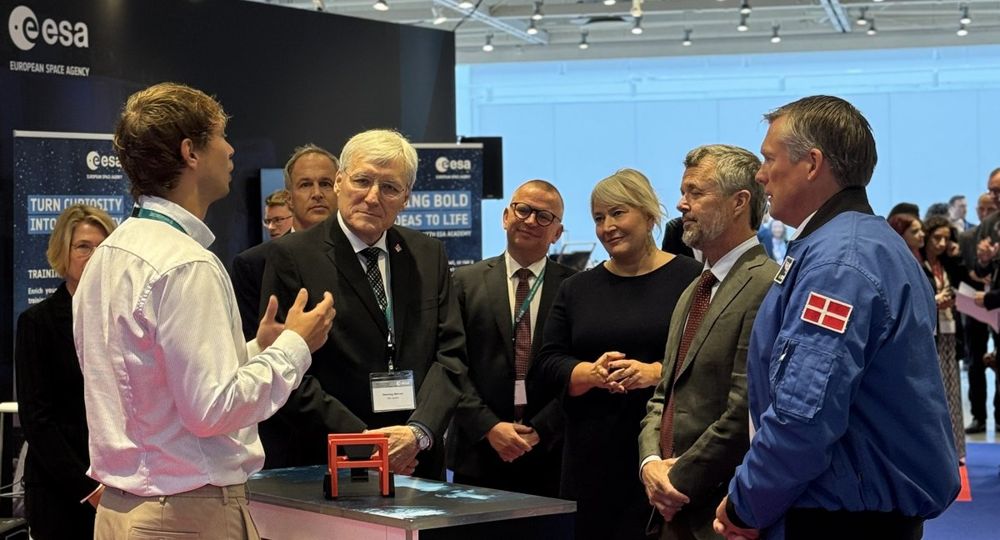

The same machine raises a bigger question.
If a robot can print a wall without a factory around it, reading unfamiliar ground and working with whatever material is on site, it's already halfway to a much harder job: building with regolith, the loose material that covers the Moon's surface, with no crew standing next to it.
ERLEtek is part of ESA BIC Denmark, which backs that parallel track: testing our vibration-printing process on regolith-like material, and researching how it could run with minimal human presence at all. It lines up with ESA's own push toward in-situ resource utilization — building with what's already there instead of shipping material from Earth.
Erle means bee in Basque. Our long-term model is a Robotic Beehive: a swarm of robots building different sections of a structure at once, coordinating digitally so no two machines get in each other's way.

In September 2026, ERLEtek presented at ESA's Space for Inspiration event in Copenhagen. The King of Denmark's delegation, ESA astronaut Andreas Mogensen, and Minister Christina Egelund stopped by to hear about the work. Construction methods don't change much by region, so a printer proven in Denmark should travel — early interest has already come in from teams in:
